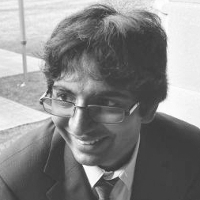
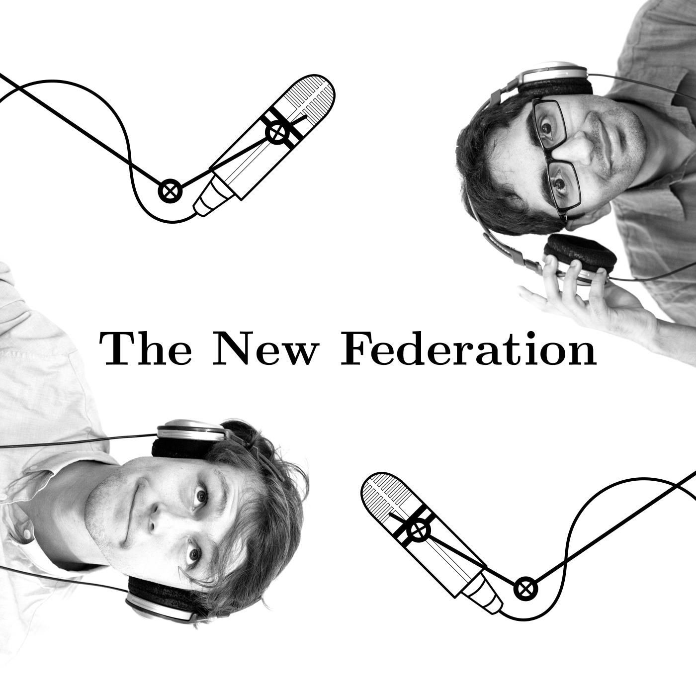

Introduction
I am currently a PhD candidate in Philosophy at the University of St Andrews. Before that I was a Research Analyst at Frost & Sullivan in Sydney.
My current research interest is in the explanation of political disagreement about justice. I am also interested in exploring how two-dimensional semantics and hyperintensionality can be applied to problems in political philosophy.
I also run, with Mario Brce, The New Federation which is a weekly podcast that discusses the important political, social and cultural issues facing Australia in the 21st Century.

Other Interests and Projects
My other interests include politics, literature, films, webpage development and producing podcasts.
I am also interested in, one day, establishing a new media outlet for serious journalism, commentary and discussion in Australia.
Education


- 2016 -
- Doctor of Philosophy, University of St Andrews.
- 2013 - 2015
- Master of Philosophy, University of Sydney. Australian Postgraduate Award Scholarship. Research Area: Political Philosophy. Thesis Title: Rawls, Dworkin and Inheritance in Liberal Democracy.
- 2009 - 2012
- Bachelor of Arts Honours (First Class), University of Sydney. Double Major in Philosophy and English. Research Area: Metaphysics, Universals, Laws of Nature. Thesis Title: Motivational Tensions for David Armstrong's Theory of Causation.
Papers Presented or Published
- 2017
- "Towards a Conceptual Explanation of
Political Disagreement about Justice" presented at the Value Disagreement conference in the New University of Lisbon.
- "Towards a Better Explanation of Political Disagreement about Justice" presented at the SASP Research Postgraduate Friday Seminar Series.
- 2014
- "The Focus of Luck-egalitarianism" presented at the Australasian Postgraduate Philosophy Conference and Australasian Association of Philosophy Conference.
- 2013
- "Luck-egalitarianism and Harshness" presented at the Australasian Postgraduate Philosophy Conference and the Higher Degree Research One-Day Conference on Social Justice.

Employment
- Sep 2016 -
- Philosophy Tutor at the University of St Andrews. PY2012 Meaning and Knowing (Semester 2 2018). PY1011 Moral and Controversies (Semester 1 2018). PY1010 Mind and World (Semester 1 2016). PY1012 Reasoning (Semester 2 2017, 2018).
- Sep 2015 - Aug 2016
- Research Analyst at Frost & Sullivan in both Information Communication Technology and Automotive research. Worked as the Lead Analyst on the Fintech in Australia - Trends, Forecasts and Analysis 2015-2020 market report and on a market research project on the Australian Automobile Aftermarket.
- Jan 2009 - Jul 2015
- English Tutor at HSC Bootcamp. Tutored students in English from Years 7-12. Recruited and managed students as well as managing the day to day operations of one branch.